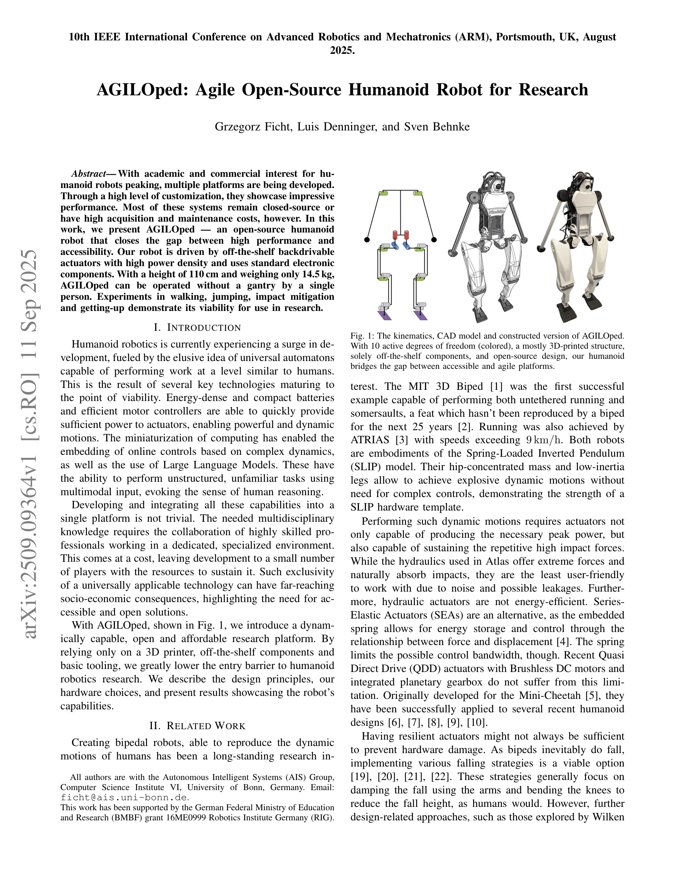

저자: Grzegorz Ficht, Luis Denninger, Sven Behnke | 날짜: 2025-09-11 | URL: https://arxiv.org/abs/2509.09364

Fig. 1: The kinematics, CAD model and constructed version of AGILOped.
AGILOped는 오픈소스 휴머노이드 로봇으로서 높은 성능과 접근성 사이의 간극을 해소하며, 3D 프린팅과 상용 부품을 활용해 6,380 USD의 저렴한 가격으로 동적 운동 능력을 제공한다.
Fig. 1: The kinematics, CAD model and constructed version of AGILOped.
총평: AGILOped는 오픈소스, 저가격, 높은 성능을 결합한 획기적인 휴머노이드 로봇으로, 휴머노이드 로봇 연구의 진입장벽을 크게 낮추고 학계의 민주화를 촉진하는 중요한 기여를 한다.